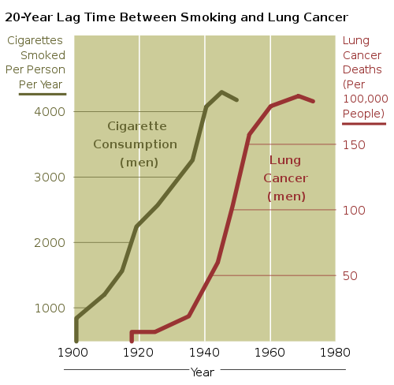

Smoking for pleasure took off in the early 20th century, especially the 1920s, when it was even advertised as a sophisticated and classy activity:
We now know from scientific evidence that smoking is extremely unhealthy. Estimates suggest that more than 40 000 people in the UK die each year from smoking-related cancers
Cigarettes contain sticky tars that coat the lungs with carcinogenic (cancer producing) chemicals. Cigarette tars also damage the gums and taste buds in the mouth.
Nicotine is another chemical present in cigarettes. It is addictive, and contributes strongly to the difficulties smokers have giving up their habit.
Carbon monoxide too is present in cigarette smoke. It is a poisonous gas that reduces the oxygen that can be carried by the circulatory system’s red blood cells to cells in the body. It also narrows blood vessels: a similar effect to that of bad cholesterol.
These chemicals enter the lungs with every single puff of a cigarette. Their damaging effects on the body build up over time. Quitting smoking even late in life can increase your lifespan.
Evidence of the effects (Edexcel, OCR)
Before the 1920s few people developed lung cancer. Cases of this and other cancers began to increase dramatically during the 20th century.
Governments began to notice that there seemed to be a correlation between smoking and lung cancer:

Source: National Institutes of Health, USA
However, despite the apparent evidence of this type of graph, a specific cause-and-effect needed to be identified to show that smoking really does cause lung cancer. The proof of this needed to be scientific.
For many years, tobacco companies argued strongly that cigarettes do not adversely affect a smoker’s health. They wanted to protect their income and profits, and tried to suggest that other factors, like pollution in general, may be causing these new cancers.
Eventually scientists were able to work out how the tars in cigarettes cause cancers: they found the specific microscopic mechanisms involved. This was the scientific proof that smoking does indeed cause cancer.
Smoking is now banned in many public places and buildings the world over
Lung cancer and heart disease (see Section 3.3) are for the most part regarded as preventable lifestyle diseases; they are not infectious diseases (see Section 1.3).
The ethics of transplants (Edexcel)
Sometimes, alcoholics are given liver transplants on the NHS, and obese people or smokers may be given a new heart. The decision is first medical (are the donor’s and the patient’s tissues similar? how ill is the patient?), but it is also an ethical one.
Heart disease and liver disease can often be almost entirely self-inflicted. If you were a donor, willing to give up your organs if you were to die in an accident, would you be happy for an alcoholic to benefit from this?
What if the person proved they could stay off alcohol for many months? Should they get a ‘second chance’? Hospitals are faced with difficult ethical dilemmas like this when deciding who should benefit from organ transplants, not least because the waiting lists for these are long.